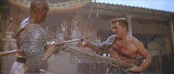

|
Spartacus/A,B |
|
Universal/1960/196m/WS 2.35 |
Spartacus is
an exciting film to watch on many levels. As a pure action adventure, the early training
and revolt scenes are thrilling. In terms of epic scale, the sweeping depiction of the
ultimate clash between Roman legions led by Crassus and the rebel army is majestically
choreographed by director Stanley Kubrick. The long pan over the legion of dead twisted
rebel bodies alone is worth owning this disc set. But Spartacus is not just a
physical assault on the senses; the political battle for the future of Rome is depicted in
exciting fashion in the philosophical clash between Gracchus, spiritual leader of the
Roman senate and the aristocratic Crassus. The intellectual battle for Rome takes place in
beautifully designed sets of the Senate chambers and Roman baths.
Less prominent as a major element in the structure of the film is
the romance between Spartacus and Varinia, which is developed to humanize the
larger than life figure of the rebel leader, and on this level it does work. No, this not
"the" great love story, but the romantic development also provides softer
interludes between the larger and most powerful cogs in the Spartacus engine.
An exquisite example of the power of the combined film elements
is the bouts of the matched pairs. When Spartacus and Draba, played by Woody
Strode, stalk and slash each other round the confines of the gladiator ring, Alex North's
magnificent score achieves it finest moments. The strains of North's music match perfectly
to the movement of the actors and this becomes a ballet-like set piece, a precious gem
adorning the overall wonderful production. For more than eight minutes the high drama of
the bout builds with no dialogue whatsoever and ultimately culminates in a scene restored
from the fangs of the censors when Olivier's Crassus executes the final thrust of the
ballet, the last note of music written in a spray of blood upon Olivier's face.
This beautifully made film is enriched by a variety of fine
performances. Although Kirk Douglas has often
been unfairly accused of being a one-dimensional actor, it is the animal intensity of
Douglas's screen presence that infuses Spartacus with incredible power. Every
close-up extracts levels of meaning to the character that scripted dialogue or action
would be hard-pressed to express over excess pages. Douglas's hardened, sculpted physique
perfectly represents the image of the fiery gladiator. The physicality of this performance
exists internally as well as externally and ranks with the best screen appearances of Kirk Douglas.
 |
Pairs to the death©Universal |
In perfect compliment to Douglas's Spartacus is Laurence
Olivier's effete Crassus. Olivier's portrayal is a masterful exhibition of an actor
acting. While Douglas's footprints are deeply embedded impressions, Olivier glides
effortlessly over the slick path of aristocratic misdeeds. Charles Laughton does a
marvelous turn as Gracchus, portraying the senator in cynical bravura fashion. Laughton's
scenes with Peter Ustinov are thoroughly enjoyable. Ustinov was honored with the Best
Supporting Actor Award for his convincing interpretation of Lencious
Batiatus, owner of
the gladiatorial school. Ustinov's pious posturing of subservience masked a fascinating
portrait of a survivor. All the style and mannerisms that comprise the breath of Ustinov's
physicality are richly wielded by the actor at his best. The characterizations and
sub-plots that exist within Spartacus raise the level of the overall production.
And there's no denying the chemistry that Jean Simmons playing Varinia generates with
Douglas.
It appears that the DVD
transfer for Spartacus is made from a composite master, thereby losing out on
some of the most important DVD benefits. There is also some edge enhancement that detracts
from the image. The widescreen images of Spartacus would have surely benefited
greatly from an anamorphic component transfer. Still, this is the best Spartacus
has looked since the Harris/Katz restoration.
The color is full range and seldom looks worn. Difficult scenes that depend on shadow
detail, like when Spartacus first meets Varinia are well handled. The Dolby
Digital 5:1 sound is clean and shows off the Alex North score handsomely. I must say
that I was pining away for the marvelous commentary extras that appeared on the Criterion
Collection special edition of a number of years ago. C'est la DVD. |
|